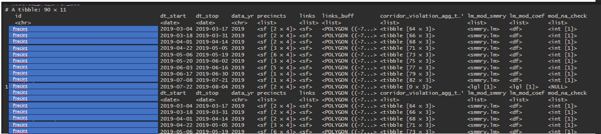
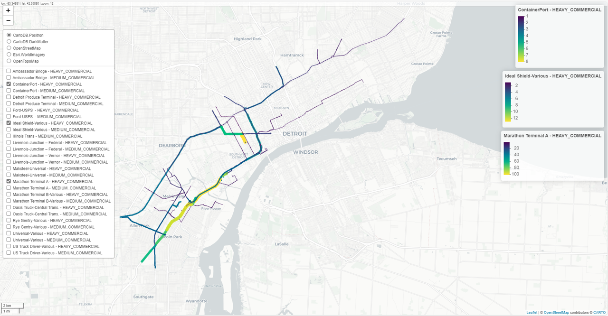

This blog serves as a brief tutorial on how to utilize the purrr package by our studio to streamline and simplify complex or repetitive sections of code.
Background
One major advantage of working with us is the ability to leverage the power of the Tidyverse R package environment. This package environment, developed by RStudio, is designed to enhance the usability of R.
An example of this enhancement is the use of ggplot for creating plots in R, as opposed to base R. purrr is one of these packages aimed at:
enhancing R’s functional programming (FP) toolkit by providing a complete and consistent set of tools for working with functions and vectors.
If this is your first encounter with vectorization in R, don’t worry. In essence, it’s a faster alternative to for loops. It involves iteratively providing a function with data and applying that function repeatedly to various subsets of the data. This concept is similar to using apply, lapply, or sapply in base R.
Tutorial Data
The data we will use in this tutorial is a data frame that records the travel times of buses for specific sections along a bus route.
trip_id: Records a unique trip sequence, which we will not use for this tutorial.direction_id: Indicates the direction the bus is heading.route_id,date_time, andvehicle_id: Not used in this tutorial.segment,segment_name, andsegment_type: Attributes that describe the segment the bus is currently traveling over.time_diff: Records the segment travel time - what we are investigating.flag_peak: Indicates the time of day.time_diff_pct: A calculated attribute indicating what percentage of an individual travel time segment is in proportion to a bus’s total route travel time - also what we are investigating.
Take a look:
data_file <- "https://raw.githubusercontent.com/michaelgaunt404/michaelgaunt404_2/master/content/post/2023-10-02-purrr-correlation-plots/data_travel_times.csv"
data <- read.csv(data_file)## X trip_id direction_id route_id
## 1 1 10906003__MCOB-DO:171:5:Saturday:1:23MAR:41004:6 south_bound 202
## 2 2 10906003__MCOB-DO:171:5:Saturday:1:23MAR:41004:6 south_bound 202
## 3 3 10906003__MCOB-DO:171:5:Saturday:1:23MAR:41004:6 south_bound 202
## 4 4 10906003__MCOB-DO:171:5:Saturday:1:23MAR:41004:6 south_bound 202
## 5 5 10906003__MCOB-DO:171:5:Saturday:1:23MAR:41004:6 south_bound 202
## 6 6 10906003__MCOB-DO:171:5:Saturday:1:23MAR:41004:6 south_bound 202
## date_time vehicle_id segement segement_name segement_type time_diff
## 1 2023-05-20 06:25:40 15106 459_712 Hewitt_100th end_end 1082
## 2 2023-05-20 06:25:40 15106 482_459 23rd_Hewitt middle_end 150
## 3 2023-05-20 06:23:10 15106 497_482 18th_23rd middle_middle 60
## 4 2023-05-20 06:21:39 15106 537_509 ramp_14th middle_middle 120
## 5 2023-05-20 06:19:39 15106 636_537 4th_ramp middle_middle 240
## 6 2023-05-20 06:15:39 15106 657_636 grove_4th middle_middle 180
## ttl_diff speed_avg flag_peak time_diff_pct
## 1 12306.4810 25.44252 AMPeak 1.00000000
## 2 1018.9276 15.19517 AMPeak 0.13863216
## 3 961.5845 35.85005 AMPeak 0.05545287
## 4 1433.0578 26.71382 AMPeak 0.11090573
## 5 4793.1265 44.67465 AMPeak 0.22181146
## 6 1096.5308 13.62705 AMPeak 0.16635860Since we are only concerned with travel time given the time-of-day and direction of travel, any attribute describing a unique bus, route, trip id, or timestamp when the measurement was recorded will be aggregated away.
Tutorial Packages
The chunk below shows which packages will be using for this tutorial.
require(tidyverse) # entire tidyverse package suite - including purrr, dplyr, ggplot, etc
require(magrittr) # for code piping
require(lubridate) # for working with dates and datetimesTutorial
In this tutorial we will investigate how each segment's travel time correlates with one another, along with the total route travel time.
In essence, we aim to create a correlation matrix using the stats::cor() function, considering the time of day and direction of travel as factors in our analysis. And to top it all off, we want to interact with these correlation matrices via a visualization.
So first we apply some initial data processing to have our base working data.
data_processed <- data %>%
filter(wday(date_time) %in% c(3, 4, 5)) %>% # grab only T, W, and TR
pivot_wider(
id_cols = c("trip_id", "direction_id", "route_id", "vehicle_id", "flag_peak"),
names_from = "segement_name",
values_from = "time_diff_pct"
) # convert from long to wide - dataCommon Pitfalls
Typically, individuals create separate data frame objects for various combinations of analysis factors.
In our case, we have two factors for:
time of day: AM and PM Peakdirection of travel: Southbound and Northbound
This results in four distinct factor combinations for our correlation matrices.
As seen below:
cor_am_nb <- data_processed %>%
filter(flag_peak == "AMPeak") %>%
filter(direction_id != "south_bound") %>%
select(!trip_id:flag_peak) %>%
cor(use = "pairwise.complete.obs")
cor_am_sb <- data_processed %>%
filter(flag_peak == "AMPeak") %>%
filter(direction_id != "south_bound") %>%
select(!trip_id:flag_peak) %>%
cor(use = "pairwise.complete.obs")
cor_pm_nb <- data_processed %>%
filter(flag_peak == "AMPeak") %>%
filter(direction_id != "south_bound") %>%
select(!trip_id:flag_peak) %>%
cor(use = "pairwise.complete.obs")
cor_pm_sb <- data_processed %>%
filter(flag_peak == "AMPeak") %>%
filter(direction_id != "south_bound") %>%
select(!trip_id:flag_peak) %>%
cor(use = "pairwise.complete.obs")And then run each data frame object through a ggplot code snippet or some other plotting function….
Again, resulting in the creation of an additional four objects as outlined below:
cor_pm_sb_plot <- cor_pm_sb %>%
corrplot::corrplot(
diag = T, type = "lower", method = "color",
order = "hclust"
)
cor_am_sb_plot <- cor_am_sb %>%
corrplot::corrplot(
diag = F, type = "lower", method = "color",
order = "hclust"
)
# you get the ideaSo what’s the matter with this workflow….. a few things.
Firstly, to create four plots, we end up with eight different data objects to manage. Handling such a large number of objects in your script can become unwieldy. Moreover, each object involves multiple filter statements and inputs that need precise copying and adjustments, leading to complex and cluttered code that can hinder your analysis.
These problems become more pronounced when dealing with large datasets, numerous factor combinations, or comparing data objects created with different function inputs.
A comment on for-loops:
For loops may be the first solution to come to your mind, and they’re not a bad option. However, when coding in R, they introduce additional issues, including the following advantages of vectorization:”
- Clarity & Readability: Vectorization offers concise and readable code.
- Performance: Vectorized operations are often faster, especially for large datasets.
- Tidyverse Integration: Seamless integration with Tidyverse tools.
- Parallel Processing: Potential for efficient multi-core processing.
- Fewer Bugs: Reduced likelihood of off-by-one errors.
- Ease of Debugging: Simplified debugging process.
- Functional Programming: Aligns with R’s functional programming paradigm.
- Efficient Memory Usage: Minimizes unnecessary object creation.
- Consistency: Ensures uniform behavior across data types.
The Optimal Solution
How can we improve this by using R specific solutions? We aim for robust, clean, easily interpretable, and concise code. To achieve this, we’ll utilize the nest() and map() functions from the purrr package.
nest()creates a list-column of data frames, given specified grouping columns. It’s essentially a summarizing operation where you get one row for each group defined by non-nested columns.map()is then used to apply functions to the list-column object
### Step 1
Define grouping variables and then nest the dataframe to a tibble.
data_processed_nest <- data_processed %>%
group_by(flag_peak, direction_id) %>%
nest()Notice how each record is a unique direction-time pair and all of the other data has been compressed into a list-column representing the time travel segments given the direction and time they are for.
print(data_processed_nest)## # A tibble: 4 x 3
## # Groups: flag_peak, direction_id [4]
## direction_id flag_peak data
## <chr> <chr> <list>
## 1 north_bound AMPeak <tibble [18 x 11]>
## 2 south_bound AMPeak <tibble [21 x 11]>
## 3 south_bound PMPeak <tibble [28 x 11]>
## 4 north_bound PMPeak <tibble [28 x 11]>You can actually see that there are a few more records in bout the PM peak subsets than in the AM.
### Step 2
Apply a function to the subsetted data and make a new column that holds the ensuing objects….
In this case, the function is all the code that falls between the curly {...} braces.
The .x represents the each subset of data that is held in the datacolumn - it is like a lambda function in python.
data_processed_nest_1 <- data_processed_nest %>%
mutate(cor = map(
data,
~ {
.x %>%
select(!c(trip_id:vehicle_id)) %>%
cor(use = "pairwise.complete.obs") %>%
data.frame() %>%
rename_with(~ str_remove_all(.x, "X")) %>%
mutate(seg = row.names(.))
}
))
print(data_processed_nest_1)## # A tibble: 4 x 4
## # Groups: flag_peak, direction_id [4]
## direction_id flag_peak data cor
## <chr> <chr> <list> <list>
## 1 north_bound AMPeak <tibble [18 x 11]> <df [8 x 9]>
## 2 south_bound AMPeak <tibble [21 x 11]> <df [8 x 9]>
## 3 south_bound PMPeak <tibble [28 x 11]> <df [8 x 9]>
## 4 north_bound PMPeak <tibble [28 x 11]> <df [8 x 9]>The nest object now has an additional corcolumn that contains the correlation matrix for each direction-time pair data subset.
### Step 3
Unnest and ungroup the object so that you have a single dataframe where each direction-time correlation matrix has been row-bound together.
data_unnested <- data_processed_nest_1 %>%
select(!data) %>%
unnest(cols = cor) %>%
ungroup()
print(head(data_unnested, 9) %>%
reactable::reactable())To Wrap Up
In summary it should look like this:
data_processed_nest <- data_processed %>%
group_by(flag_peak, direction_id) %>%
nest() %>%
mutate(cor = map(
data,
~ {
.x %>%
select(!c(trip_id:vehicle_id)) %>%
cor(use = "pairwise.complete.obs") %>%
data.frame() %>%
rename_with(~ str_remove_all(.x, "X")) %>%
mutate(seg = row.names(.))
}
)) %>%
select(!data) %>%
unnest(cols = cor) %>%
ungroup()And we can now use that object for our analysis.
plot <- data_processed_nest %>%
pivot_longer(
cols = !c(direction_id, flag_peak, seg),
names_to = "seg_1"
) %>%
mutate(cor_value = round(value, 2)) %>%
ggplot() +
geom_tile(aes(seg, seg_1, fill = cor_value)) +
scale_fill_gradient2(limits = c(-1, 1)) +
theme(axis.text.x = element_text(angle = 45, vjust = 1, hjust = 1)) +
facet_grid(
rows = vars(direction_id),
cols = vars(flag_peak)
) +
labs(fill = "Cor Value", x = "", y = "")
interactive_object <- plot %>% plotly::ggplotly()In summary
So in simple terms, with a few lines of code and way fewer data objects we were able to:
- Make subsets of our data as defined by our grouping variables
- Make a compact, single nested data fram to hold our subsets and apply functions to it
- Unnest that nested list-column object to make a dataframe
When working with data in R, consider using purrr and nested data frames with list columns over traditional methods. Here’s why:”
Simplified Code: Cleaner and more concise code.Structured Data: Organized and structured storage of related data.Efficiency: Efficient function application with purrr.Dynamic Input Handling: Handling dynamic inputs is straightforward.Better Integration: Seamless integration with Tidyverse tools.Improved Readability: Enhances code readability.Easier Debugging: Simplified debugging due to structured data.Scalability: Scales well for larger datasets and multiple factors.Maintainability: Easier management of a single nested data frame.Community and Documentation:Strong support and extensive documentation.Fucntion-izable Code: More concise, robust code can be functionalized and reused
Additional Examples
This section is intended to get you interested in using purrr but without going into great detail…
Custom Metic Summarization Function
Apply DescTools::Quantile() function many times (given user specified quantiles) to segment travel time metric and create many attributes.
quantiles <- seq(0, 1, .25)
data_qunatiles <- data %>%
group_by(segement_name, flag_peak, direction_id) %>%
summarize(across(time_diff,
purrr::map(
quantiles,
~ purrr::partial(DescTools::Quantile,
probs = .x
)
),
.names = "{.col}_qt_{quantiles}"
)) %>%
ungroup()glimpse(data_qunatiles)## Rows: 32
## Columns: 8
## $ segement_name <chr> "100th_88th", "100th_88th", "100th_88th", "100th_88t~
## $ flag_peak <chr> "AMPeak", "AMPeak", "PMPeak", "PMPeak", "AMPeak", "A~
## $ direction_id <chr> "north_bound", "south_bound", "north_bound", "south_~
## $ time_diff_qt_0 <dbl> 90.0000, 60.0000, 90.0000, 120.0000, 60.0000, 60.000~
## $ time_diff_qt_0.25 <dbl> 131.2500, 120.0000, 121.0000, 180.0000, 60.0000, 60.~
## $ time_diff_qt_0.5 <dbl> 150.0, 121.0, 180.0, 211.5, 61.0, 60.0, 90.0, 60.0, ~
## $ time_diff_qt_0.75 <dbl> 151.00, 151.00, 210.00, 278.25, 90.25, 90.00, 91.00,~
## $ time_diff_qt_1 <dbl> 241.0000, 211.0000, 331.0000, 1320.4986, 2700.0000, ~For bonus points, function-alize it!
make_stats <- function(data, grp_c = c("segement_name", "flag_peak", "direction_id"),
quantiles = seq(0, 1, 0.05)) {
data %>%
group_by(across({{ grp_c }})) %>%
summarize(across(time_diff, purrr::map(
quantiles,
~ purrr::partial(DescTools::Quantile, probs = .x)
),
.names = "{.col}_qt_{quantiles}"
)) %>%
ungroup()
}
make_stats(data, grp_c = "direction_id", quantiles = c(.5, .95)) %>%
glimpse()Load All Directory Files
Loading multiple files from a directory can be a real hassle, but with map, you can simply point to a directory.
R will handle the task of listing all the files in that directory - mapping through his list will load each one by one and you’ll end up with a single list object, where each element contains the contents of a file. It’s that easy
read_xlsx_allFiles <- function(data_location = "./data/", specifically = NULL,
clean = F, clean_string = NULL, sheet = sheet, latest = F) {
file_list <- list.files(data_location) %>%
.[str_detect(., "xlsx")] %>%
paste0(data_location, .) %>%
{
if (!is.null(specifically)) (.) %>% .[str_detect(., specifically)] else .
} %>%
{
if (latest) .[parse_number(.) == max(parse_number(.))] else .
}
if (clean) {
data_list <-
file_list %>%
map(~ readxl::read_xlsx(.x, sheet = sheet) %>%
na_if("NULL") %>%
janitor::remove_empty("cols") %>%
janitor::clean_names())
} else {
data_list <-
file_list %>%
map(~ readxl::read_xlsx(.x, sheet = sheet))
}
if (!is.null(clean_string)) {
names(data_list) <- file_list %>%
map(~ str_remove(.x, data_location) %>%
str_remove(".csv") %>%
gsub(str_glue("{clean_string}.*"), "\\1", .))
} else {
names(data_list) <- paste0(file_list, sheet)
}
data_list
}Scrape Mulitple URLs
Take two lists of items, supply them to pmap (multiple-map) and scrape data tables on site.
Notice that I can make intermediate data objects during the p-mapping operation, that won’t be saved to disk at the end.
You will be left with a list containing four dataframes.
library(rvest)
library(tidyverse)
# URL to scrape
url_list <- list(
running_backs = "https://www.fantasypros.com/nfl/advanced-stats-rb.php?range=full",
running_backs_rz = "https://www.fantasypros.com/nfl/red-zone-stats/rb.php?range=full?range=full",
wide_rec = "https://www.fantasypros.com/nfl/advanced-stats-wr.php?range=full",
wide_rec_rz = "https://www.fantasypros.com/nfl/red-zone-stats/wr.php?range=full?range=full"
)
processed <- list(
url_list,
names(url_list)
) %>%
pmap(function(x, y) {
webpage <- read_html(x) %>%
html_node("#data") %>% # Replace with the appropriate CSS selector
html_table() %>%
data.frame()
colnames(webpage) <- webpage[2, ]
webpage <- webpage[-c(1, 2), ]
element_text <- webpage %>%
janitor::clean_names() %>%
mutate(across(c(contains("pct"), contains("_percent")), ~ as.numeric(gsub("%", "", .)))) %>%
mutate_at(
.vars = setdiff(names(.), "player"),
.funs = as.numeric
) %>%
separate(col = "player", into = c("player", "team"), sep = " \\(") %>%
mutate(
team = str_remove_all(team, "[[:punct:]]"),
label = str_glue("{player}")
) %>%
mutate(data = y)
print(element_text)
Sys.sleep(2)
return(element_text)
# return(list(element_text, webpage)) #if you want to return multiple subobjects
})Performing/Saving Workflows
Complex workflows can be streamlined into a single map/nest/purrr process.
The following script carries out four distinct operations on spatial data, each generating a unique nested column.
- TS Subset: This step temporally pre-filters each precinct within a defined time window.
- TF_SF: Performs spatial processing of the data and additional data manipulation.
- LM Mod Summary: Generates individual models for each record.
- LM Mod Coefficient and Mod NA Check: Extracts model performance coefficients from each model and ensures the successful execution of each model.
model_summons <- function(corridor_obj, summons,
lookback = 12, extra_rad = 0) {
# corridor_obj = enf_corridor_list_objct
# summons = summons_data
# lookback = 12
# extra_rad = 0
corridor_obj %>%
.[c(1), ] %>%
mutate(
summons_ts_subset = pmap(
list(dt_start, dt_stop, data_yr),
function(x, y, z) {
tryCatch(
{
summons %>%
.[VIOLATION_DATE > (x - months(lookback)) &
VIOLATION_DATE < (y + months(lookback)), ]
},
error = function(err) {
print("Error in summons prefilter..")
print(err$message)
return(NA)
}
)
}
)
) %>%
mutate(
summons_ts_sf = pmap(
list(summons_ts_subset, links_buff, dt_start, dt_stop),
function(x, y, z, m) {
tryCatch(
{
x %>%
st_as_sf(
coords = c("Longitude", "Latitude"),
crs = 4326
) %>%
st_filter(y %>%
gauntlet::quick_buffer(radius = extra_rad)) %>%
st_drop_geometry() %>%
mutate(period = case_when(
(VIOLATION_DATE) < as_date(as_date(z) - months(1)) ~ "BeforeAction",
(VIOLATION_DATE) > as_date(as_date(m) + months(1)) ~ "AfterAction",
T ~ "Middle"
) %>%
fct_relevel("BeforeAction", "AfterAction", "Middle")) %>%
group_by(VIOLATION_DATE, period) %>%
summarise(count = sum(count)) %>%
ungroup()
},
error = function(err) {
print("Error occurred:")
print(err$message)
return(NA)
}
)
}
)
) %>%
mutate(
lm_mod_smmry = map(
summons_ts_sf,
~ {
tryCatch(
{
lm(count ~ period, data = .x) %>%
summary()
},
error = function(err) {
print(paste("Error occurred:", err$message))
return(NA)
}
)
}
)
) %>%
mutate(
lm_mod_coef = map(
lm_mod_smmry,
~ {
tryCatch(
{
.x %>%
coef() %>%
data.frame() %>%
mutate(metric = rownames(.))
},
error = function(err) {
print(paste("Error occurred:", err$message))
return(NA)
}
)
}
),
mod_na_check = map(
lm_mod_coef, ~ (.x %>% nrow())
)
)
}See the below image – it is the object created by this function. You can save it as an RDS object, so there’s no need to rerun your entire analysis. This nifty trick simplifies data storage and retrieval, making life easier.

Making Maps with Many Layers
Creating maps with numerous unique layers can be a bit of a headache if you’re constructing each layer manually.
The good news is, there’s an easier way – map over each variable layer to craft a unique map, and then blend all those layers into a single, grand map.
data_od_sf %>%
mutate(layer_id = str_glue("{vehicle_type} - {type}") %>%
group_by(layer_id_1 = layer_id) %>%
group_map(~{
tmp_layer_name = unique(.x$layer_id)
mapview(.x
,cex = "count"
,zcol = "count"
,layer.name = str_glue("{tmp_layer_name} - Freight Count")
# ,col.region = pal(.x$count))
)
}) %>%
reduce(`+`)